Swissvotes – Übersichtsdokument
1. Der Datensatz im Überblick
1.1 Grundlegende Informationen
| Merkmale | Wert |
|---|
| Quelle | Swissvotes – Année Politique Suisse, Universität Bern |
| Inhalt | Eidgenössische Volksabstimmungen der Schweiz |
| Zeitraum | 12.09.1848 bis Juni 2026 |
| Anzahl Abstimmungen | 708 |
| Anzahl Spalten | 874 |
| Lizenz | CC BY 4.0 |
1.2 Abstimmungsergebnisse (1848–2025)
| Ergebnis | Anzahl | Anteil |
|---|
| Angenommen | 328 | 46,3 % |
| Abgelehnt | 369 | 52,1 % |
| Ohne Ergebnis | 3 | 0,4 % |

1.3 Rechtsformen
| Code | Rechtsform | Anzahl |
|---|
| 1 | Obligatorisches Referendum | 201 |
| 2 | Fakultatives Referendum | 218 |
| 3 | Volksinitiative | 242 |
| 4 | Direkter Gegenentwurf | 43 |
| 5 | Stichfrage | 4 |
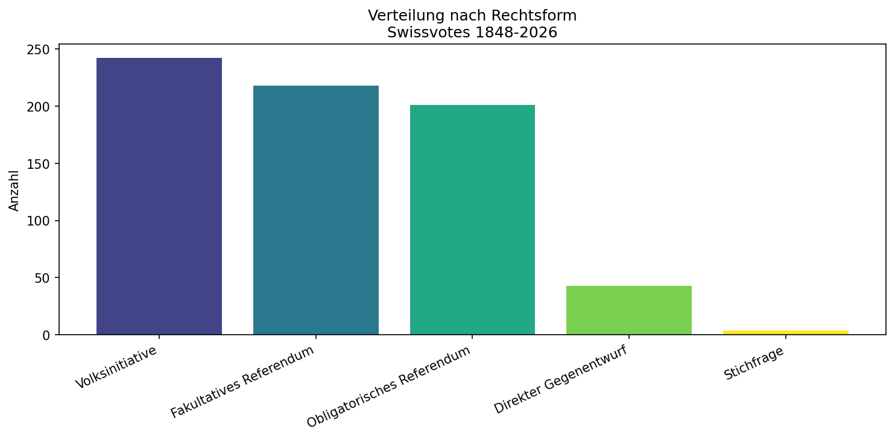
1.4 Abstimmungen pro Jahrzehnt
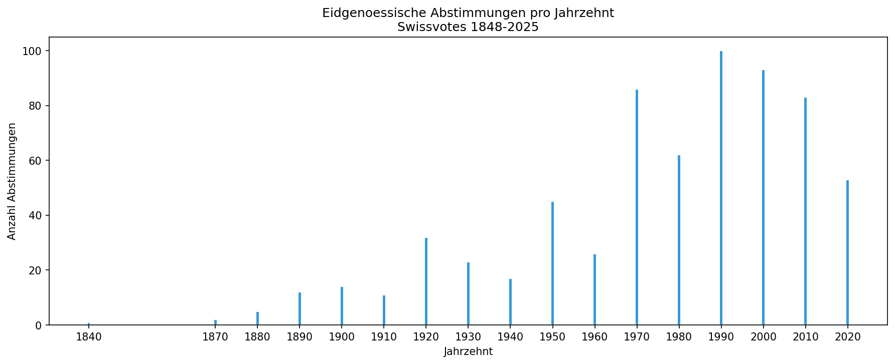
2. Die 12 Hauptgruppen (Politikbereiche)
Jede Abstimmung kann bis zu drei Politikbereichen zugeordnet werden.
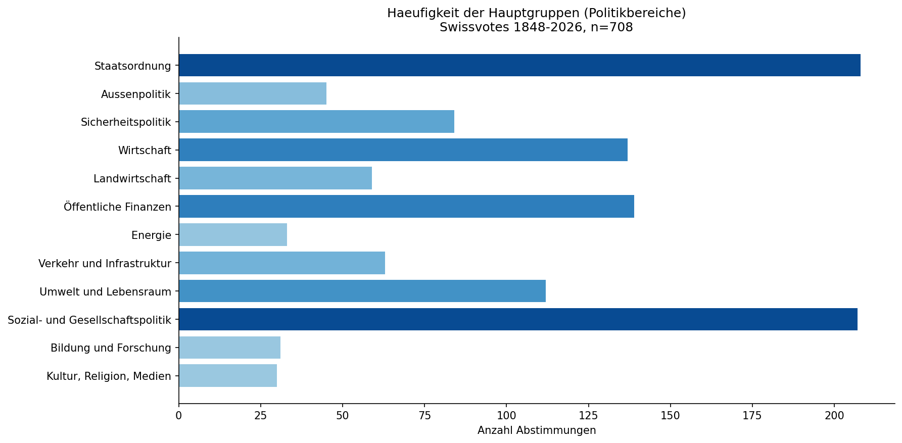
2.1 Rangliste
| Rang | Hauptgruppe | Anzahl | Anteil |
|---|
| 1 | Staatsordnung | 208 | 29,4 % |
| 2 | Sozial- und Gesellschaftspolitik | 207 | 29,2 % |
| 3 | Öffentliche Finanzen | 139 | 19,6 % |
| 4 | Wirtschaft | 137 | 19,4 % |
| 5 | Umwelt und Lebensraum | 112 | 15,8 % |
| 6 | Sicherheitspolitik | 84 | 11,9 % |
| 7 | Verkehr und Infrastruktur | 63 | 8,9 % |
| 8 | Landwirtschaft | 59 | 8,3 % |
| 9 | Aussenpolitik | 45 | 6,4 % |
| 10 | Energie | 33 | 4,7 % |
| 11 | Bildung und Forschung | 31 | 4,4 % |
| 12 | Kultur, Religion, Medien | 30 | 4,2 % |
2.2 Übereinstimmung Volk – Bundesratsempfehlung
Folgt das Volk den Empfehlungen des Bundesrats? Die Tabelle zeigt nur Vorlagen, bei denen der Bundesrat eine klare Position (Befürwortend oder Ablehnend) vertrat. «Gefolgt» bedeutet: Das Abstimmungsergebnis entspricht der Bundesratsempfehlung.
| Hauptgruppe | Gefolgt | Nicht gefolgt | Total | Anteil gefolgt |
|---|
| Sozial- und Gesellschaftspolitik | 103 | 25 | 128 | 80,5 % |
| Staatsordnung | 54 | 27 | 81 | 66,7 % |
| Verkehr und Infrastruktur | 41 | 11 | 52 | 78,8 % |
| Wirtschaft | 36 | 13 | 49 | 73,5 % |
| Öffentliche Finanzen | 36 | 11 | 47 | 76,6 % |
| Sicherheitspolitik | 34 | 12 | 46 | 73,9 % |
| Umwelt und Lebensraum | 35 | 8 | 43 | 81,4 % |
| Landwirtschaft | 22 | 9 | 31 | 71,0 % |
| Aussenpolitik | 21 | 9 | 30 | 70,0 % |
| Energie | 15 | 5 | 20 | 75,0 % |
| Bildung und Forschung | 16 | 4 | 20 | 80,0 % |
| Kultur, Religion, Medien | 9 | 5 | 14 | 64,3 % |
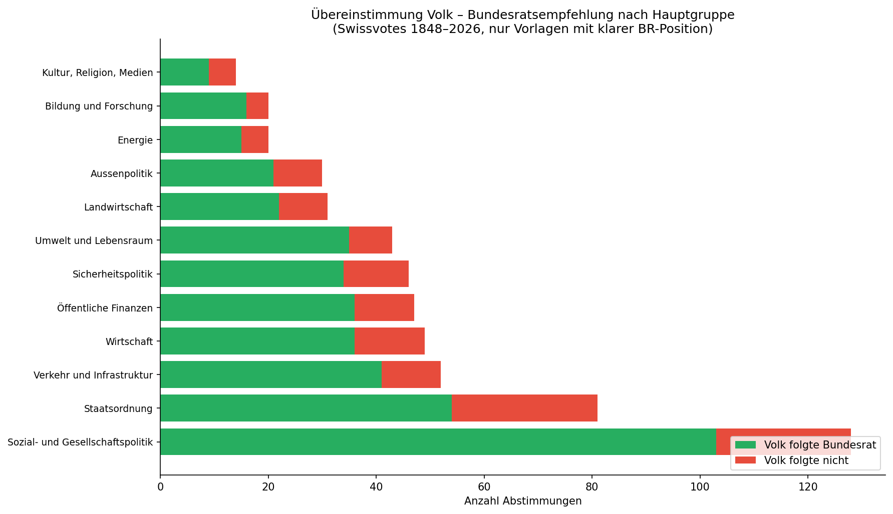
2.3 Anteil angenommener Vorlagen nach 4-Jahresperiode (pro Hauptgruppe)
Liniendiagramme: X-Achse = 4-Jahresabstände, Y-Achse = Anteil angenommener Vorlagen in %. Je Hauptgruppe eine Zeitreihe.

6. Öffentliche Finanzen
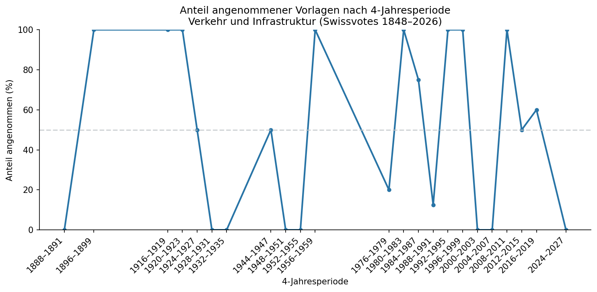
8. Verkehr und Infrastruktur
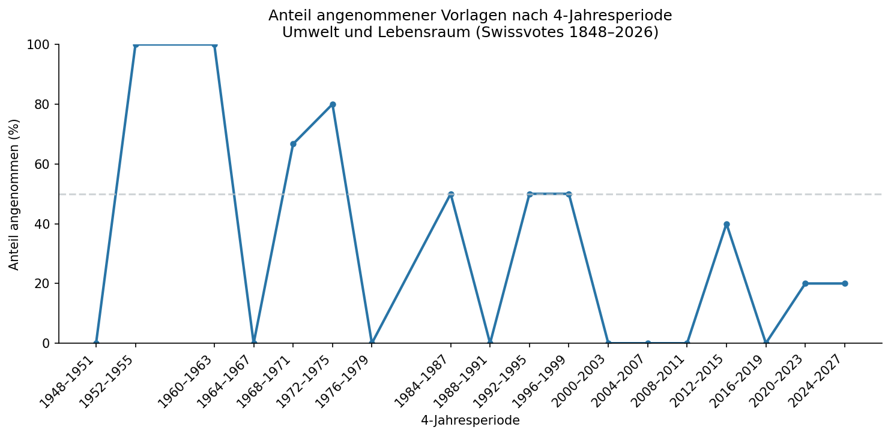
9. Umwelt und Lebensraum
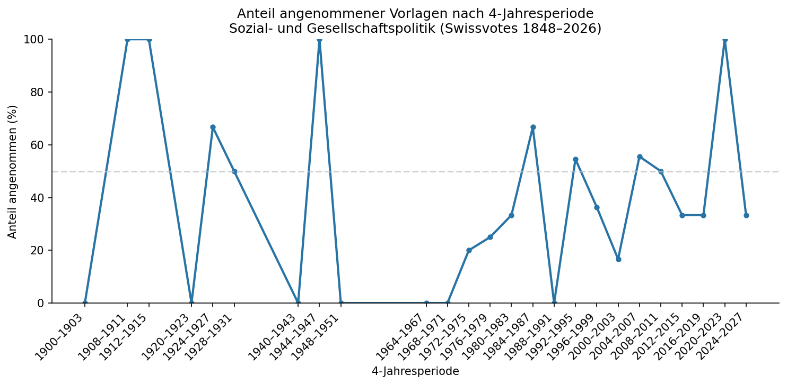
10. Sozial- und Gesellschaftspolitik
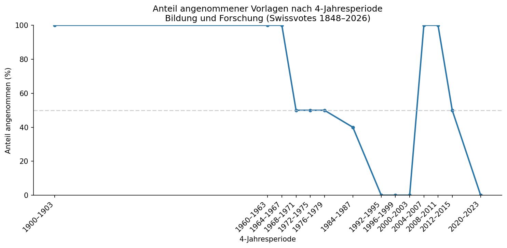
11. Bildung und Forschung
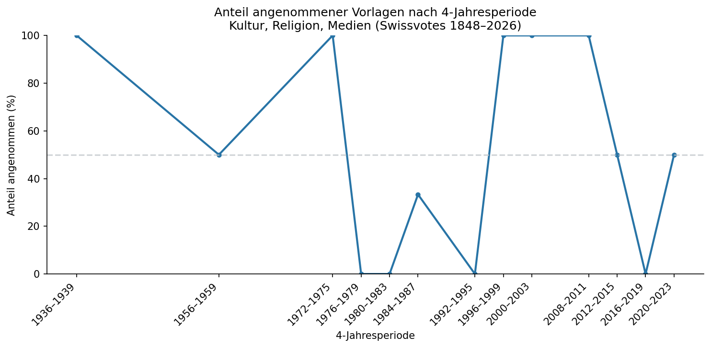
12. Kultur, Religion, Medien
2.4 Bundesratsempfehlung: Gefolgt vs. nicht gefolgt (gestapelt, pro 4-Jahresperiode)
Gestapelte Balkendiagramme: X-Achse = 4-Jahresabstände, Y-Achse = Anteil in %. Grün = Volk folgte der Bundesratsempfehlung, Rot = Volk folgte nicht. Nur Vorlagen mit klarer BR-Position.
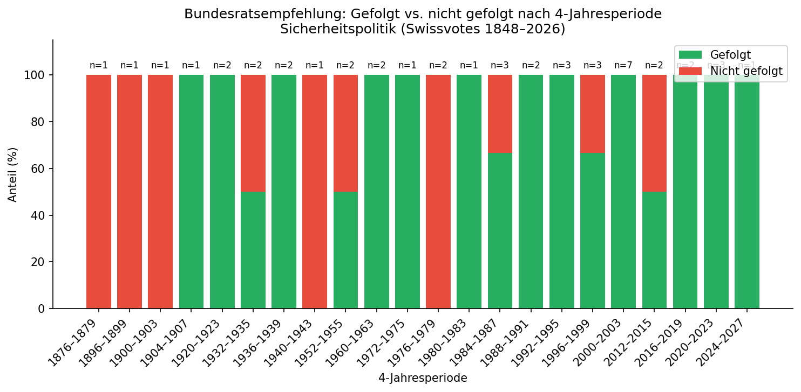
3. Sicherheitspolitik

4. Wirtschaft
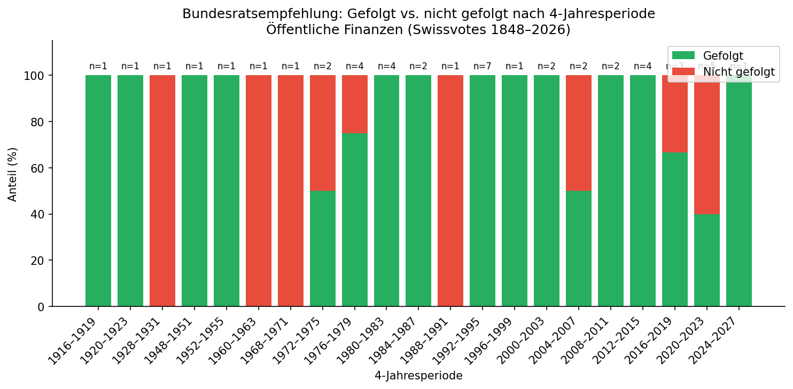
6. Öffentliche Finanzen
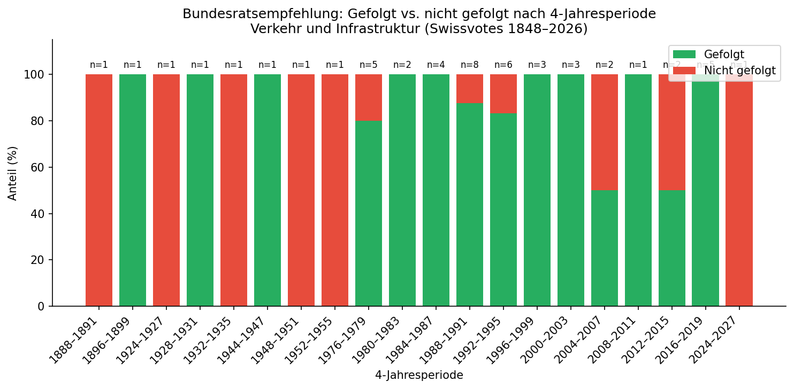
8. Verkehr und Infrastruktur
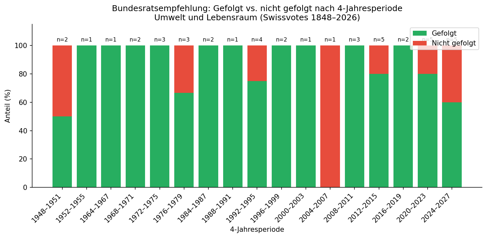
9. Umwelt und Lebensraum
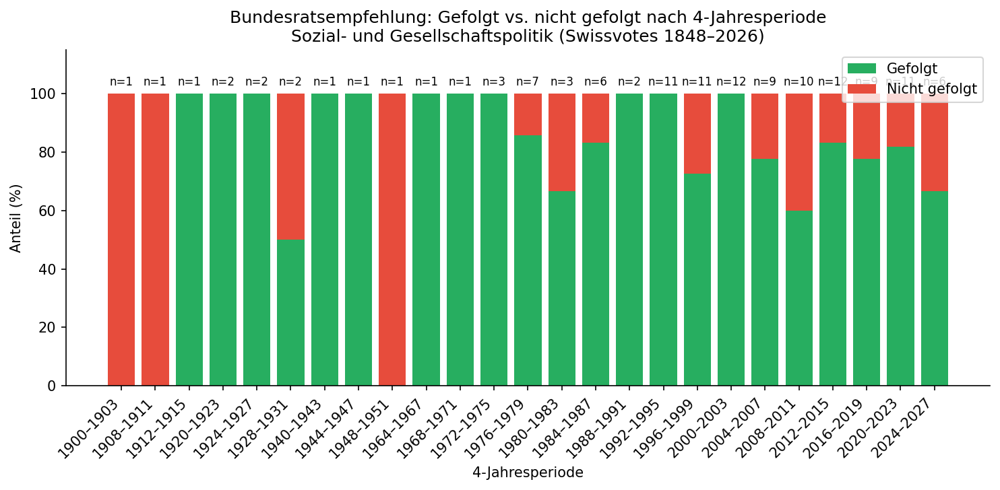
10. Sozial- und Gesellschaftspolitik
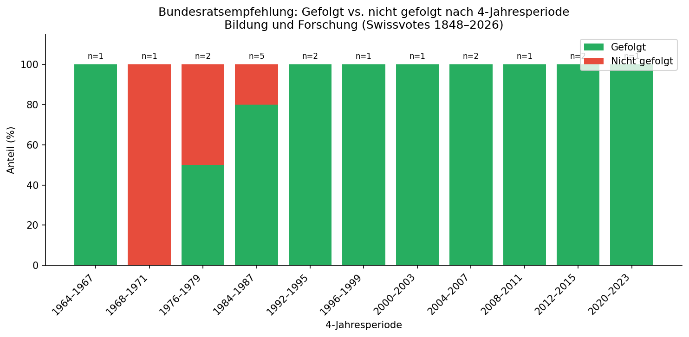
11. Bildung und Forschung
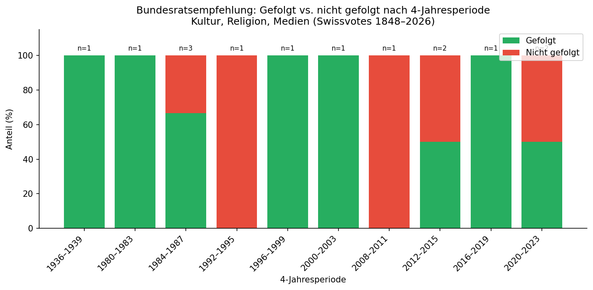
12. Kultur, Religion, Medien
2.5 Wortanalyse
Häufigste Wörter in den Kurztiteln (titel_kurz_d) und Stichwörtern (stichwort) der Vorlagen. Stopwörter (der, die, und, etc.) und Wörter mit 3 oder weniger Zeichen wurden ausgeschlossen.
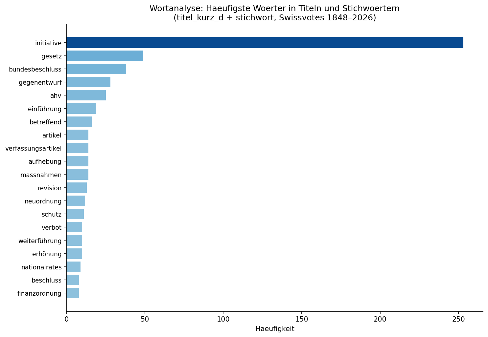
| Rang | Wort | Häufigkeit |
|---|
| 1 | initiative | 253 |
| 2 | gesetz | 49 |
| 3 | bundesbeschluss | 38 |
| 4 | gegenentwurf | 28 |
| 5 | ahv | 25 |
| 6 | einführung | 19 |
| 7 | betreffend | 16 |
| 8 | artikel | 14 |
| 9 | verfassungsartikel | 14 |
| 10 | aufhebung | 14 |
| 11 | massnahmen | 14 |
| 12 | revision | 13 |
| 13 | neuordnung | 12 |
| 14 | schutz | 11 |
| 15 | verbot | 10 |
| 16 | weiterführung | 10 |
| 17 | erhöhung | 10 |
| 18 | nationalrates | 9 |
| 19 | beschluss | 8 |
| 20 | finanzordnung | 8 |
| 21 | änderung | 8 |
| 22 | bundesverfassung | 7 |
| 23 | krankenversicherung | 7 |
| 24 | volksinitiative | 7 |
| 25 | bekämpfung | 7 |
| 26 | abkommen | 7 |
| 27 | finanzierung | 7 |
| 28 | mehrwertsteuer | 7 |
| 29 | reform | 6 |
| 30 | teil | 5 |
3. Querschnittsthemen
Breite Themenbereiche, die mehrere Hauptgruppen berühren. Die Zuordnung erfolgt gemäss den Politikbereichen (d1e1–d3e3) im Swissvotes-Datensatz. Eine Abstimmung kann mehreren Themen zugeordnet sein.
| Thema | Anzahl Hauptgruppen | Anzahl Abstimmungen |
|---|
| Gesundheit | 1 | 52 |
| Digitalisierung | 3 | 43 |
| Migration | 1 | 99 |
| Klima & Umwelt | 4 | 203 |
| EU & Aussenpolitik | 1 | 45 |
| Soziale Sicherheit | 1 | 86 |
| Armee & Sicherheit | 1 | 84 |
| Finanzen & Steuern | 2 | 163 |
3.1 Gesundheit
52 Abstimmungen | Hauptgruppe: 10 (Sozial- und Gesellschaftspolitik)
| Thema | Hauptgruppe | Unterbereich |
|---|
| Gesundheitspolitik | 10. Sozial- und Gesellschaftspolitik | 10.1.1 |
| Medizinforschung, Medikamente | 10. Sozial- und Gesellschaftspolitik | 10.1.2, 10.1.3 |
| Suchtmittel | 10. Sozial- und Gesellschaftspolitik | 10.1.4 |
| Fortpflanzungsmedizin | 10. Sozial- und Gesellschaftspolitik | 10.1.5 |
| Krankenversicherung | 10. Sozial- und Gesellschaftspolitik | 10.2.4 |
3.2 Digitalisierung
43 Abstimmungen | Hauptgruppen: 1 (Staatsordnung), 8 (Verkehr/Infrastruktur), 12 (Kultur/Medien)
| Thema | Hauptgruppe | Unterbereich |
|---|
| E-ID | 1. Staatsordnung | 1.6.6 Datenschutz |
| E-Voting | 1. Staatsordnung | 1.4.3 Stimmrecht |
| E-Government | 1. Staatsordnung | 1.3.1 Regierung, Verwaltung |
| Telekommunikation | 8. Verkehr und Infrastruktur | 8.7 |
| Digitale Medien | 12. Kultur, Religion, Medien | 12.5 |
3.3 Migration
99 Abstimmungen | Hauptgruppe: 10 (Sozial- und Gesellschaftspolitik)
| Thema | Hauptgruppe | Unterbereich |
|---|
| Migration & Integration | 10. Sozial- und Gesellschaftspolitik | 10.3.1 |
| Asylpolitik | 10. Sozial- und Gesellschaftspolitik | 10.3.2 |
| Einbürgerung | 1. Staatsordnung | 1.6.3 Bürgerrecht |
| Personenfreizügigkeit | 2. Aussenpolitik | 2.5, 2.6 |
3.4 Weitere Querschnittsthemen
| Thema | Betroffene Hauptgruppen | Abstimmungen |
|---|
| Klima & Umwelt | 7 Energie, 8 Verkehr, 9 Umwelt, 5 Landwirtschaft | 203 |
| EU & Aussenpolitik | 2 Aussenpolitik | 45 |
| Soziale Sicherheit | 10 Sozialversicherungen (AHV, IV, KV, ALV, etc.) | 86 |
| Armee & Sicherheit | 3 Sicherheitspolitik | 84 |
| Finanzen & Steuern | 6 Öffentliche Finanzen, 4 Finanzwesen | 163 |
4. Vertrauen in den Staat
Relevante Themenbereiche für Vertrauensforschung:
- Staatsordnung – Institutionen, Volksrechte
- Aussenpolitik – Regierungskompetenz
- Öffentliche Finanzen – Umgang mit Steuergeldern
- Sozialpolitik – staatliche Leistungen
Umfragedaten: VOX (gfs.bern), OECD Trust Survey, Swiss Household Panel, Selects
5. Abstimmungen 2026
5.1 8. März 2026
- Bargeld-Initiative, Gegenentwurf, Stichfrage
- SRG-Initiative «200 Franken sind genug!»
- Klimafonds-Initiative
- Gesetz über die Individualbesteuerung
5.2 14. Juni 2026
- «Nachhaltigkeitsinitiative»
- Zivildienstgesetz
6. Zusammenfassung der Konzeption
6.1 Ausgangspunkt
Untersuchung des Swissvotes-Datensatzes mit Fokus auf die Frage:
Wie stark folgt die Bevölkerung der Empfehlung des Bundesrats?
Ziel: Bestimmung geeigneter Hauptgruppen und thematischer Fokussierung.
6.2 Empfohlene analytische Gruppierungen
A) Politikbereiche (zentrale Dimension)
- Wirtschaft & Finanzen
- Sozialpolitik
- Umwelt / Energie
- Migration
- Sicherheit
- Institutionelles
B) Abstimmungstyp
- Volksinitiative
- Fakultatives Referendum
- Obligatorisches Referendum
C) Konfliktintensität
- Parteieinigkeit vs. Polarisierung
6.3 Rolle von Strategiedokumenten des Bundesrats
Strategiedokumente können helfen:
- politische Schwerpunktfelder zu identifizieren
- die Fragestellung theoretisch zu begründen
- einen aktuellen Fokus zu setzen
Beispielhafte thematische Fokussierungen: Energie- und Klimapolitik, Sozialpolitik (AHV, Gesundheitskosten), Migration.
Strategien dienen primär der inhaltlichen Rahmung, nicht direkt als Datengrundlage.
6.4 Vertrauen in die Regierung
Es existieren empirische Daten zum Vertrauen in den Bundesrat bzw. staatliche Institutionen:
- Bundesamt für Statistik (Vertrauensindikatoren)
- OECD Trust Survey
- Vox/VOTO-Nachbefragungen
- Politikwissenschaftliche Studien (z.B. ETH)
6.5 Mögliche Erweiterung der Analyse
Vertrauen kann als erklärende Variable genutzt werden:
Hypothese: Je höher das Vertrauen in den Bundesrat, desto höher die Unterstützung seiner Empfehlung.
Mögliche Designs: Zeitreihenanalyse, Verknüpfung von Swissvotes mit Vertrauensdaten, Vergleich nach Politikfeldern.
Quellen: Swissvotes (www.swissvotes.ch), CODEBOOK, Linder et al. (2010): Handbuch der eidgenössischen Volksabstimmungen 1848–2007.